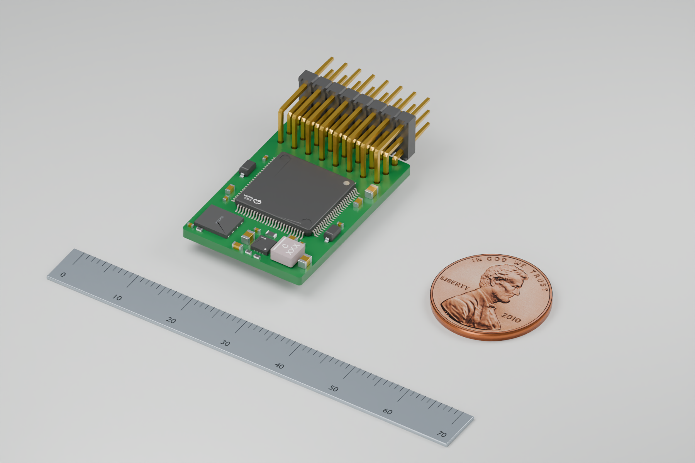

Native CAD · Studio series / 01
Small board.
Every detail.
Our V4 flight controller, rendered up close in green soldermask. A metric ruler and a US penny share the scene at their real dimensions.
Physical scale / millimeters

Upper LogicNative component geometry, green PCB surfaces and studio lighting.
Download full resolution ↓
Turn it over. Look closer.
Choose a board, rotate freely and zoom into the components.
Built from our actual V4 geometry
The studio images use Blender Cycles path tracing, the current native Upper Logic and Lower Power meshes, physically shaded materials and soft studio lights. They are CAD renders, not photographs of manufactured hardware.
Only the green PCB appearance and presentation materials have changed. No component placement, board geometry or routing changed. The main-stack view retains the provisional 8.64 mm facing-board gap. The separate Service board is not placed in this scene.
Scale and model fidelity
The steel ruler has 1 mm divisions. The penny is 19.05 mm in diameter and 1.52 mm thick, matching the reference viewer. All props share the board’s coordinate scale; perspective affects their apparent size.
Native library models are not manufacturer-certified. J20/J21 connector bodies are absent. Fine fabrication textures, solder fillets, traces and silkscreen absent from the source meshes have not been invented. Native PCB slab thickness differs from the saved fabrication stack; these images do not establish final assembly fit.
Penny obverse: United States Mint, public-domain image via Wikimedia Commons. Interactive reverse texture: Leopard2A7m, CC BY-SA 4.0. Image credits · Three.js license